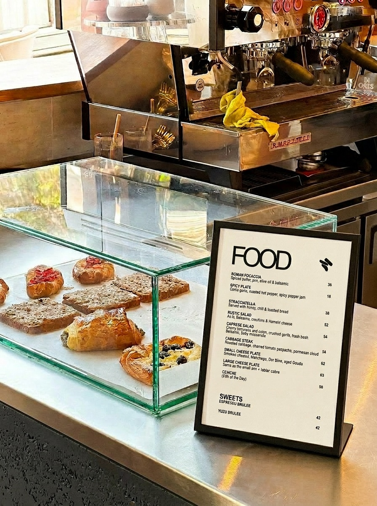

Norish
Menu design and identity system for a Tel Aviv café, built to feel effortless at the table.
Menu Design
Norish came in with an existing brand and one existing menu - the drinks menu, with its hand-drawn illustrations. The brief was to keep that visual language, fix its typographic issues, and then extend the whole system across multiple new formats: food, morning, combined menus, in both Hebrew and English, each in different print sizes.
The real challenge was building a system flexible enough to hold across all of that without losing consistency. Different formats, different languages, different content - but every menu had to feel like it came from the same place. The solution was typographic: clear hierarchy, deliberate spacing, and a structure built on weight and proportion rather than decoration. Rules that could travel across formats without needing to be reinvented each time.
A menu works best when it disappears. The guest shouldn't notice the design - they should just be able to order. Every decision here was made in service of that, while keeping the warmth and character that Norish already had.
Illustrations on drinks menu are by artist Yuval Fella


